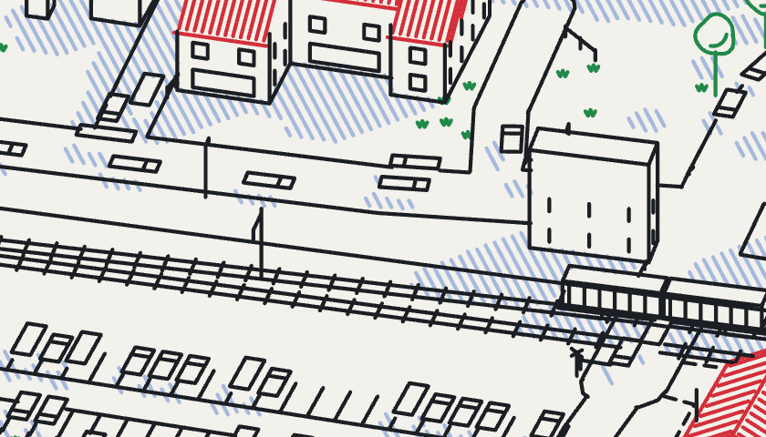
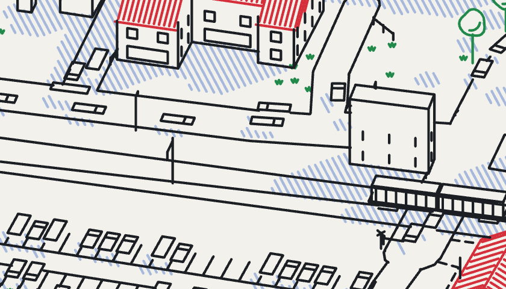

15 November 2026 · Original review · Round 12
Rail pairs now test the clear space between their projected strokes, allowing for ink. The gate uses the actual standard, tram or narrow gauge rather than a single nominal width. A cramped mapped way simplifies to one centre line without sleepers.
Where twin rails survive, sleeper pitch allows for the most compressed projected direction, with at least 1.2 mm at default Detail and pen width and a floor of two physical pen widths. The ground pitch never drops below its existing 2.6 m. Overhead lines and masts retain their existing geometry.


Mollis, Trubschachen and Zürich Airport at 1:500 and 1:1000, Detail 1, 0.35 mm pen, optional OSM tags off. Four of the six sheets are unchanged. Trubschachen at 1:1000 saves about 1.5 minutes of estimated plotting time.
| Sheet | Waste before → after | Estimated time change |
|---|---|---|
| Mollis 1:500 | 4.0% → 4.0% | +0.00% |
| Mollis 1:1000 | 6.0% → 6.0% | +0.00% |
| Trubschachen 1:500 | 5.3% → 5.3% | +0.00% |
| Trubschachen 1:1000 | 5.4% → 5.2% | -1.55% |
| Zürich Airport 1:500 | 5.7% → 5.7% | +0.00% |
| Zürich Airport 1:1000 | 5.7% → 5.7% | -0.14% |
Before lab report · After lab report (local generated files)
Reviewed the changed Amsterdam golden against its previous sheet, all six LOD sheets and centre close-ups, plus the enlarged railway comparison. Only rail strokes and plot/SVG summaries change in the golden; other feature totals, census and counts stay unchanged. Tests cover orientation-dependent simplification, narrow gauge, clear rail spacing and perpendicular sleeper separation with regular and broad pens at shallow tilt. Build and all 580 tests pass.
No physical prints were inspected, nor every view, junction, seed or all 29 presets. The illustrated comparison shows rail-pair simplification; the shallow-view broad-pen sleeper-spacing branch was checked geometrically in tests rather than in a dedicated visual proof. The minimum gauge across a whole mapped way is conservative, and tight bends or nearby separate tracks can still crowd each other. Overhead-wire overlaps remain a separate refinement.